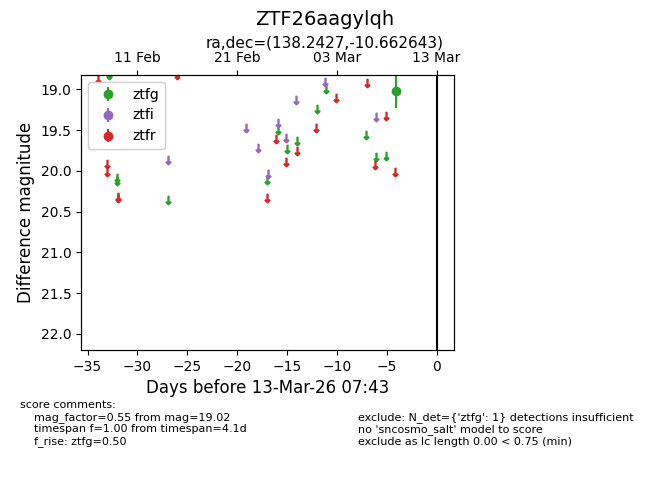
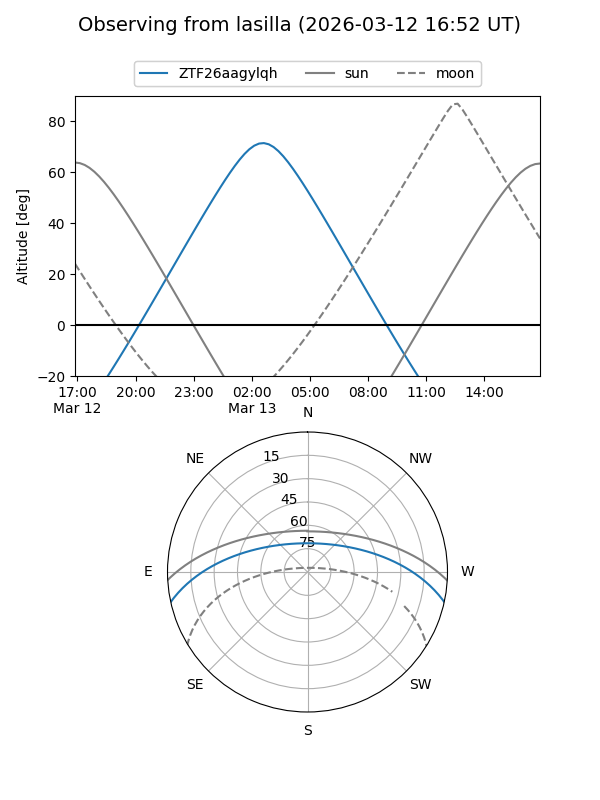
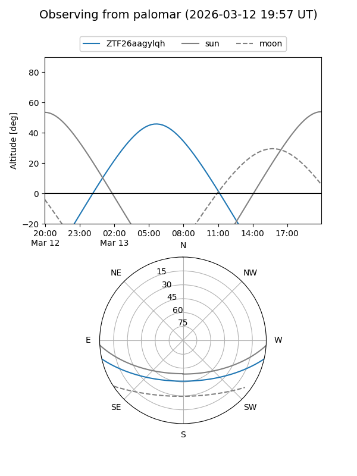

ZTF26aagylqh
Target ZTF26aagylqh at 2026-03-13 07:45
Aliases and brokers:
FINK: link
Lasair: link
ALeRCE: link
alt names
ZTF26aagylqh (ztf,fink_ztf)
Coordinates:
equatorial (ra, dec) = 138.2427,-10.66264
equatorial (HMS+DMS) = 09:12:58.25,-10:39:45.52
galactic (l, b) = (240.8276,+24.96561)
Flags:
Photometry:
last ztfg=19.02
1 ztfg detections
Lightcurve

Visibility


Additional plots